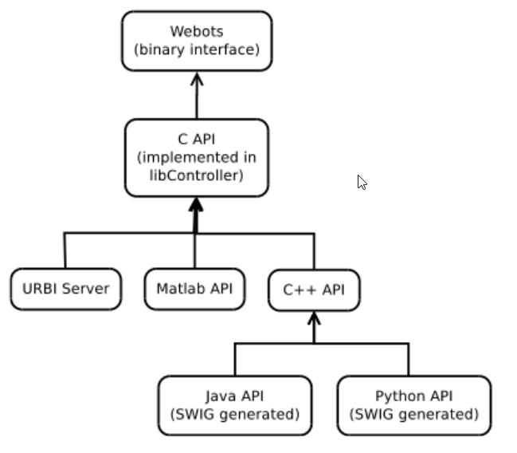
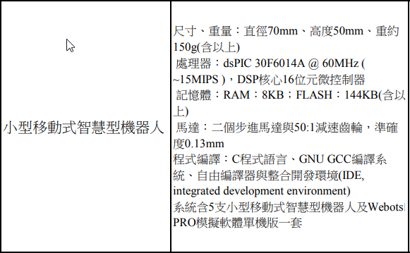

FreeCAD <<
Previous Next >> VRML
Webots
官方網站: https://cyberbotics.com/
原始碼: https://github.com/cyberbotics
https://github.com/cyberbotics/webots/releases
https://github.com/cyberbotics/blender-webots-exporter
2018 論文 - Robot Design for Everyone: Computational Tools that Democratize the Design of Robots (下載)
Part1: Robot Design for Everyone_1_2.pdf
Part2: Robot Design for Everyone_2_2.pdf
V-rep 早在 2013 年初就率先開源, 而同樣來自瑞士 (V-rep 2010 推出模擬套件, 公司在 2014 成立, Webots 則在 1998 年從 EPFL 轉出成立公司) 的 Webots 也在 2018 年底宣布開源
這兩套機電資整合系統模擬套件之所以選擇透過軟體開源行銷, 背後可能的思考參見:
https://opensource.com/life/15/12/why-open-source
https://rubygarage.org/blog/why-open-source-is-good-for-business
Webots APIs Overview

Webots_2019b_rev1.7z (登入 gm.nfu.edu.tw 後下載)
Webots 啟動條件:
執行路徑設定
set path_webots=%Disk%:\Webots_2019b_rev1\msys64\mingw64\bin;%Disk%:\Webots_2019b_rev1\msys64\usr\bin
啟動指令:
在 y:\ 根目錄建立 start_webots.bat, 內容為:
start Y:\Webots_2019b_rev1\msys64\mingw64\bin\webots.exe
當隨身程式系統納入上述兩個條件並啟動後, 可以直接在命令列輸入 start_webots.bat 啟動.
Webots 執行時, 會將 prefs 相關設定存在 Registry 中:
Computer\HKEY_USERS\...\Software\Cyberbotics\Webots-R2019b
包括:
Directories -
Editor -
General -
Internal -
MainWindow -
Movie -
Network -
OpenGL -
RecentFiles -
Sound -
View3d -
VirtualRealityHeadset -
其中, 在 Tools->Preferences 只開放 General, OpenGL 與 Network 等三項透過視窗表單設定.
Webots 組態設定檔案: windows10_webots_registry.7z
Webots Tutorial
https://cyberbotics.com/doc/guide/tutorials
webots_ex1.pdf
webots_lab2.pdf
webots_user_guide_2004.pdf
webots_curriculum_2008.pdf
https://cyberbotics.com/doc/guide/tinkerbots
Revolve-An Evolutionary Robotics.pdf
https://www.idi.ntnu.no/emner/it3708/index.php
Analysis of Simple Planar Linkages.pdf
Tutorial 1
這裡的 World 指由機電資系統整合模擬者所建構的 system of created things (造物系統), 在 V-rep 此一包含模擬環境設定的模型稱為 Scene (場景), 而在 Webots 則可稱為 World (模擬世界).
A World (模擬世界) is a file containing information like where the objects are, what they look like, how they interact with each other, what is the color of the sky, how is defined the gravity, friction, masses of the objects, etc. It defines the initial state of a simulation. The different objects are called Nodes (節點) and are organized hierarchically in a Scene Tree (場景樹). Therefore, a node may contain sub-nodes. A world is stored in a file having the .wbt extension. The file format is derived from the VRML97 language, and is human readable. The world files must be stored directly in a directory called worlds.
VRML_lecture.pdf
intro_vrml97.pdf
vrml_2.0_specification.pdf
VRML Primer and Tutorial.pdf
https://www.whoishostingthis.com/resources/vrml/
Studying Geometry Color and Texture in VRML.pdf
標準檔案架構
The Root Directory of a Project
The root directory of a project contains at least a directory called "worlds" containing a single world file. But several other directories are often required:
"controllers": this directory contains the controllers available in each world files of the current project. The link between the world files and this directory is done through the controller field of the Robot node. More information about this directory in the following subsections.
"protos": this directory contains the PROTO files available for all the world files of the current project.
"plugins": this directory contains the plugins available in the current project. The link between the world files and this directory is done through the physics field of the WordInfo node.
"worlds": this directory contains the world files, the project files (see below) and the textures (typically in a subdirectory called "textures").
The Project Files
The project files contain information about the GUI (such as the perspective). These files are hidden. Each world file can have one project file. If the world file is named "myWorldFile.wbt", its project file is named ".myWorldFile.wbproj". This file is written by Webots when a world is correctly closed. Removing it allows you to retrieve the default perspective.
The "controllers" Directory
This directory contains the controllers. Each controller is defined in a directory. A controller is referenced by the name of the directory. Here is an example of the controllers directory having one simple controller written in C which can be edited and executed.
controllers/
controllers/simple_controller/
controllers/simple_controller/Makefile
controllers/simple_controller/simple_controller.c
controllers/simple_controller/simple_controller[.exe]
場景導航
Dragging the mouse while pressing a mouse button moves the camera of the 3D window.
Camera rotation: In the 3D window, click on an object with the left mouse button and drag the mouse to rotate the viewpoint around it. If you click on the background, the camera will rotate around its own position.
Camera translation: In the 3D window, press the right button and drag the mouse to translate the camera.
Zooming / Camera rotation: In the 3D window, press both left and right mouse buttons simultaneously (or just the middle button) and drag the mouse vertically, to zoom in and out. Dragging the mouse horizontally will rotate the camera around the viewing axis. Alternatively, the mouse wheel alone can also be used for zooming.
移動與縮放物體
Currently Webots provides two different ways to move solid objects: axis-aligned handles and keyboard shortcuts.
Axis-aligned Handles
When a solid object is selected, some arrow-shaped handles appear in the 3D window. These handles can be used to translate and rotate the object along the corresponding axis. For moving the object you can simply click on the handle and drag it to the desired position. A label will show the currect relative translation or rotation during the movement.
If the Control key (Ctrl) is pressed, the handles for resizing the solid object will be displayed instead of translation and rotation handles. These resize handles can also be enabled from the Field Editor.
快捷鍵
Translation: To move an object parallel to the ground: hold down the Shift key, press the left mouse button and drag.
Rotation: To rotate an object around the world's vertical axis: hold down the Shift key, press the right mouse button and drag.
Lift: To raise or lower an object: hold down the Shift key, press both left and right mouse buttons (or the middle button) and drag. Alternatively, the mouse wheel combined with the Shift key can also be used.
Applying a Force to a Solid Object with Physics
To apply a force to an object, place the mouse pointer where the force will apply, hold down the Alt key and left mouse button together while dragging the mouse.
Linux users should also hold down the Control key (Ctrl) together with the Alt key. This way your are drawing a 3D-vector whose end is located on the plane parallel to the view which passes through the point of application. The intensity of the applied force is directly proportional to the cube of the length of this vector.
Applying a Torque to a Solid Object with Physics
To apply a torque to an object, place the mouse pointer on it, hold down the Alt key and right mouse button together while dragging the mouse.
Linux users should also hold down the Control key (Ctrl) together with the Alt key. Also, macOS users with a one-button mouse should hold down the Control key (Ctrl) to emulate the right mouse button. This way your are drawing a 3D-vector with origin the center of mass and whose end is located on the plane parallel to the view which passes through this center. The object is prompted to turn around the vector direction, the intensity of the applied torque is directly proportional to the product of the mass by the length of the 3D-vector.
Solvespace 零件尺寸與 Webots
因為 Webots 內建的尺寸單位為 m, 因此利用 Import 導入 wrl 檔案時, 該檔案從 Solvespace 以 mm 尺寸執行繪圖後, 轉為 wrl 後導入 Webots, 若 Solvespace 以 mm 數字輸出, 則必須將 scale 調整為 1/1000, 才能夠將該 mm 數字轉為 m, 得到正確的零件尺寸. 一般在 Solvespace 均以 mm 作圖, 因此轉出 wrl 時必須注意轉出內容與所使用繪圖單位之間的轉換.
Solvespace 與轉出檔案有關的 export scale factor 在 home->configuration 中, 內建為 1, 以 mm 單位輸出, 若要改為以 m 輸出, 可將 export scale factor 設為 1:1000.
使用者可以將零件從 Solvespace 轉出 wrl 後, 在 transform 中加入
scale 0.001 0.001 0.001
後重新存檔, 就可以在 Import 轉入 Webots 後, 得到正確的尺寸. 也可以修改 Solvespace 的原始碼, 自動在轉出的 wrl 檔案中加入 scale 轉換, 改以 m 作為尺寸單位.
另外, 由於 Webots 無法解讀從 Solvespace 轉出 wrl 檔案中的 colorPerVertex, color 以及 colorIndex 等三種欄位資料, 因此也可以在修改 scale 時將這些欄位資料刪除. 或從 Solvespace 原始碼中進行修改.
例如:
#VRML V2.0 utf8
#Exported from SolveSpace 3.0
DEF a1m_block Transform {
scale 0.001 0.001 0.001
children [
Shape {
appearance Appearance {
material DEF a1m_block_material_255 Material {
diffuseColor 0.300000 0.300000 0.300000
ambientIntensity 0.300000
transparency 0.000000
}
}
geometry IndexedFaceSet {
colorPerVertex TRUE
coord Coordinate { point [
-50.400000 50.000000 1000.000000,
-50.400000 -0.000000 1000.000000,
0.000000 50.000000 1000.000000,
0.000000 -0.000000 1000.000000,
-50.400000 -0.000000 0.000000,
-50.400000 50.000000 0.000000,
0.000000 -0.000000 0.000000,
0.000000 50.000000 0.000000,
] }
coordIndex [
0, 1, 2, -1,
2, 1, 3, -1,
4, 5, 6, -1,
6, 5, 7, -1,
3, 1, 6, -1,
6, 1, 4, -1,
1, 0, 4, -1,
4, 0, 5, -1,
0, 2, 5, -1,
5, 2, 7, -1,
2, 3, 7, -1,
7, 3, 6, -1,
]
color Color { color [
0.3921568692 0.3921568692 0.3921568692,
] }
colorIndex [
0, 0, 0, -1,
0, 0, 0, -1,
0, 0, 0, -1,
0, 0, 0, -1,
0, 0, 0, -1,
0, 0, 0, -1,
0, 0, 0, -1,
0, 0, 0, -1,
0, 0, 0, -1,
0, 0, 0, -1,
0, 0, 0, -1,
0, 0, 0, -1,
]
}
}
]
}
E-Puck Python control program
"""e-puck controller."""
from controller import DifferentialWheels
robot = DifferentialWheels()
maxSpeed = 1000.0
speed = 500.0
timestep = int(robot.getBasicTimeStep())
def clamp(value, minValue, maxValue):
return max(minValue, min(maxValue, value))
distanceSensors = []
for i in range(8):
name = 'ps' + str(i)
distanceSensor = robot.getDistanceSensor(name)
distanceSensor.enable(timestep)
distanceSensors.append(distanceSensor)
while robot.step(timestep) != -1:
delta = distanceSensors[7].getValue() - distanceSensors[0].getValue()
robot.setSpeed(
clamp(speed + 4 * delta, -maxSpeed, maxSpeed),
clamp(speed - 4 * delta, -maxSpeed, maxSpeed)
)
利用可攜系統中的 SciTE 控制 Webots 模擬世界
目前 Webots_2019b_rev1.7z 啟用 Python 執行 controller 程式時, 使用可攜系統所安裝的 Python 3.7 版, 假如要使用 SciTE 執行 Webots 中模擬世界中的 Controller, 必須:
1. 將 Webots 中 python 3.7 動態程式庫與 bin 中的 c++ 動態程式庫目錄, 納入可攜 Python 程式庫路徑設定, 例如:
set PYTHONPATH=%CDisk%\py373\DLLs;%CDisk%\py373\Lib;%CDisk%\py373\Lib\site-packages;Y:\Webots_2019b_rev1\msys64\mingw64\bin;Y:\Webots_2019b_rev1\lib\python37;
2. 將模型中 controller 設為 <extern>, 然後啟動 Webots 模擬後, 以 SciTE 開啟位於 controller 目錄中的控制器 python 程式後, 以 Tools->Go 執行 controller 程式, 以便控制 Webots 中的對應模型.
NX 以 WRL 轉入 Webots:
輸入格式:
DEF 名稱 Transform{
child[
shape{}
shape{}
]}
若要將轉入零件當作 boundingObject, 必須先將 Transoform to Solid, 接著展開 children, 並在 children 之下, 以 Add New 加入 Group 節點, 並將所有轉入的 Shape 放入 Group 節點中的 Children 節點之內, 並將 Group 命名後, 放入 Solid 節點中的 boundingObject.
若要將 NX 轉入的 wrl 零組件之間加入連接軸, 必須分別將各零件的 Shape 放入各 Group 節點下的 Children, 並對各零件所處的 Group 命名且設定為其上層 Solid 節點所屬的 boundingObject.
範例: NX_export_to_Webots_example.7z
Controller Programming
https://cyberbotics.com/doc/guide/controller-programming
Web Simulation
https://cyberbotics.com/doc/guide/web-simulation
TCP/IP interface
https://cyberbotics.com/doc/guide/interfacing-webots-to-third-party-software-with-tcp-ip
SolidReference
https://cyberbotics.com/doc/reference/solidreference
Worldinfo
https://www.cyberbotics.com/doc/reference/worldinfo
When Webots launches a controller program, it searches inside the controller folder for a binary file with the same name as the folder, e.g., my_controller/my_controller.exe. if not found, it will try to copy it from the my_controller/build folder. If not such folder exists, it will try other possibilities, including launching my_controller/my_controller.py. This is certainly what you want to achieve. Therefore, I would recommend you to delete any file and subfolder from your controller folder except your Python controller program. That should fix your problem.
https://stackoverflow.com/questions/55702930/how-to-program-a-controller-using-python3
https://cyberbotics.com/doc/guide/using-python
https://cyberbotics.com/doc/guide/controller-programming#languages-settings
Webots Nodes and API functions
https://www.cyberbotics.com/doc/reference/nodes-and-api-functions
VRML viewer in Javascript
https://github.com/easyw/vrm360
Numerical Optimization Methods
https://cyberbotics.com/doc/guide/using-numerical-optimization-methods
Webots archive
https://www.cyberbotics.com/archive/
Closed Chain
The SolidReference is a placeholder of a Solid nodes and can be inserted in the joint 'endPoint' field to link two separate structures together.
參考資料
https://janus.conf.meetecho.com/
https://github.com/Phylliade/ikpy
https://www.x3dom.org/
https://github.com/x3dom/x3dom
2016 報價: 約 NT$ 400,000. (https://www.cyberbotics.com/e-puck 約 NT$ 25,000.)

FreeCAD <<
Previous Next >> VRML